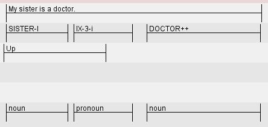
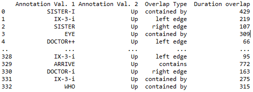

About
I earned my PhD in Linguistics from Purdue University, where I studied with Ronnie Wilbur in the Sign Language and Linguistics Lab.
I am interested in the emergence of grammatical features in L/language via iconicity, or, a motivated connection between how a word (or sign or gesture) looks like and what it means.
My current work explores perceptual features that guide argument structure encoding and decoding in silent gesture (pantomime) and in signs from natural sign languages.
By applying modified linguistic tests to pantomime, my goal is to characterize how structure arises in developing sign languages, and ultimately become codified.
My previous work focused on linguistic constraints on 'gestural' elements in ASL verbs of motion and location, making critical comparisons
between information available in classifier constructions (aka, depicting verbs, etc.) in American Sign Language and in lexical motion verbs.
While classifier constructions allow for much richer spatial descriptions than regular motion verbs,
they are still subject to cross-linguistic constraints on (spatial) information packaging.
Outside of this, I pick at an outstanding puzzle relating the syntax and semantics of adnominal modifiers, specifically adjectives in APs and adjectives/ nouns in synthetic compounds. The similar constellation of semantic interpretations argues for a similar syntax between APs and synthetic compounds, contrary to fact.
In my free time, I like to cycle and garden. In rainier months, I burn through classic and world cinema.
Education
PhD in Linguistics, Purdue University, 2019
Major professor: Ronnie Wilbur
Committee: Jeffrey Mark Siskind, Evie Malaia, Elaine Francis
Thesis: Transparency of transitivity in pantomime, sign language
MA in Linguistics, Purdue University, 2013
Major professor: Ronnie Wilbur
Committee: Elena Benedicto, Elaine Francis
Thesis: Motion events and event segmentation in American Sign Language
BA in Linguistics, Middlebury College, 2009
Major professors: Christopher Star, Vera Lee-Schoenfeld
Thesis: A theoretical look at the Person Agreement Marker in German Sign Language
Major: Linguistics, cum laude
Minor: Latin
Publications
Submitted
Bradley, C., Malaia, E., Siskind, J. M. and R. B. Wilbur. Visual form of ASL verb signs predicts non-signer judgment of transitivity.
[MS ↗]
Karabuklu, S., Wood, S. Sandra , Bradley, C., Wilbur, R. B. , and E. A. Malaia. Sign language learning increases temporal resolution of visual attention.
[MS ↗]
In progress
Bradley, C. Visual form and event semantics predict transitivity in pantomimed actions: Evidence for compositionality.
[Early draft ↗]
Presentations
Bradley, C. (2021). Compositionality in holistic pantomime characterizes a gesture-first protolanguage. Talk to be given at Expression, Language, and Music 1. Hartford, CT,
USA.
Evidence for argument structure in the form of pantomime. Poster presented at Experiments in Linguistic Meaning 1. Philadelphia, PA, USA. September, 2020.
Bradley, C. (2020). Evidence for subunit structure when gesturers communicate in/transitive actions.
Poster presented at the CUNY Conference on Human Sentence Processing 33. Amherst, MA, USA.
[abstract ↗]
Bradley, C. (2018) Can formal features be predicted from form? Using Machine Learning to predict transitivity class from the form of pantomime and ASL classifier constructions.
Poster presented at
Formal and Experimental Advances in Sign Language Theory 7. Venice, IT. [
abstract ↗]
Bradley, C., Siskind, J.M., and R. Wilbur. (2017) Neural representation of minimal syntactic units.
Poster presented at Cognitive Computational Neuroscience 1. New York, NY, USA. [abstract ↗]
Bradley, C. and H. Nassar. (2017) Rapid processing of ELAN data: quick and dirty numbers for statistical analysis.
Poster presented at
Formal and Experimental Approaches to Sign Language Theory 6. Reykjavik, Iceland. [
abstract ↗]
Bradley, C. and V. Lee-Shoenfeld. (2010) A theoretical look at the Person Agreement Marker in German Sign Language.
Poster presented at Theoretical Issues in Sign Language Research 10. West Lafayette, IN, USA.
Theses
Bradley, C. (2019). Transparency of transitivity in pantomime, sign language [Full ↗] [ Summary]
The goal of the project was to uncover similarities
in form-meaning correspondence between sign language and pantomime with respect to transitivity coding. In brief, I elicited pantomimes and classifier constructions (a subset of highly
imagistic signs in American Sign Language [ASL]) from non-signers and a signer, respectively,
that show the manipulation or movement of everyday objects. I annotated these productions
for phonetic (purely visual) and phonological (visual, but organized by the grammar of ASL)
features and correlated them with transitivity labels (i.e., manipulation: transitive; movement:
intransitive). I then used Amazon Mechanical Turk (AMT) to obtain transitivity judgments
from non-signers, and correlated these judgments with features of the stimuli as well.
Several features accurately predicted both actual and perceived transitivity, suggesting that: (a)
without explicit training, non-signers recruit the same visual features for encoding and decoding
transitivity in pantomime; and (b) the encoding of transitivity in classifier constructions and
pantomime can be predicted using these same features. This suggests that these features have
their roots in more domain general cognitive processes (e.g., vision, manual praxis), and suggests
specific parameters for communicative strategies that collocutors try or principally do not try.
The full dissertation can be accessed via the link above.
Bradley, C. (2013). Motion events and event segmentation in American Sign Language [Full ↗] [ Summary]
This project examined verbs of motion and location in American Sign Language (ASL) in light of semantic limits on the amount of spatial information spoken languages exhibit.
Such verbs in ASL come in two sorts, lexical verbs (akin to words in spoken languages) and classifier constructions (aka depicting verbs), a set of highly iconic, polymorphemic signs.
It was found that lexical verbs pattern like verbs of motion/ location in spoken languages, while classifier constructions could provide much richer spatial descriptions.
The project provides some discussion on whether path and location are gestural, linguistic or both in classifier constructions, but ultimately concludes that Language is not fully described without the inclusion of possibilities that are uniquely available to sign languages.
Bradley, C. (2009). A theoretical look at the Person Agreement Marker in German Sign Language. [ Summary]
This paper provided a syntactic treatment of the agreement marker, PAM, in German Sign Language.
Specifically, despite Spell-Out traditionally being the locus of agreement phenomena (e.g., in Minimalism and Distributed Morphology), PAM interacts syntactically.
I explained PAM's different linear positions by appealing to Remnant Movement, though the syntactic behavior of a post-syntactic agreement element was ultimately left unexplained.
Projects
Click project names to expand/ collapse description. See my GitHub ↗ for source code. All are scripted in Python.
I contributed all conceptualization, planning and coding.
Translucency/ Transparency#sign language #experiment #NLP #basic inferential statistics
This project investigates whether transparency scores correlate with translucency scores. Many signs in American Sign Language (ASL) are said to be iconic with respect to their lexical meaning. The sign CAT, for instance, is signed by tracing the outline of whiskers. Non-signers will agree that the sign CAT looks like its meaning when presented with its equivalent English word, but are less likely to accurately name the sign without the translation (Klima and Bellugi, 1979). A sign is said to be translucent if non-signers agree that it looks like what it means with the translation. A sign is said to be transparent if non-signers can accurately name the sign without translation.
We replicate this finding by asking non-signers to label verbs that vary with respect to their translucency (these measures were obtained from ASL-LEX.org), selecting 15 verbs that have low, medium, and high iconicity scores (5 at each level). However, instead of scoring '1' HIT and '0' MISS, we use a measure of the semantic similarity (obtained from wordnet). Preliminary results are dichotomous, with items with low and medium translucency scores having very low transparency scores, and items with high translucency scores having high transparency scores.
ELAN Overlap #sign language #annotation #html/xml processing
A little program designed to extract simultaneous annotations in the video annotation software, ELAN [
link ↗ ]. The bottom left image shows a snippet of the ELAN interface, demonstrating simultaneous annotations.
Given an .eaf file and two tiers of interest, the program reports pairwise overlaps, including (a) the two overlapping annotations, (b) the overlap type (containment, overlap of one edge or the other, etc.), and (c) the duration of the overlap.
Results are returned in a table (dataframe) for easy exploration (bottom right image).
 
ASL-LEX iconicity #sign language #corpus #machine learning #(logistic) regression
Is lexical category information apparent in the form of signs from American Sign Language (ASL)? This project correlates visual (iconic) features of ASL signs with lexical/ grammatical category information using corpus information downloaded from ASL-LEX.org [
link ↗ ]. Such features include whether the sign is two handed, the sign's handshape, and the movement of the sign. Features were percolated into an 8-fold leave-one-out cross-validation paradigm using a logistic regression classifier. Results indicate that visual features only weakly predict sign category membership.
The project also considers lexical information, e.g., Do verb signs exhibit greater handshape (phonological) neighborhood density than noun signs? Classifier performance was worse trained on lexical features than on visual features.
This project contributes to our understanding of how visual or lexical information does or does not bootstrap language learning (here, learning the grammatical class of a sign) in the visual/ manual modality. However, the analysis suffers from a small, unbalanced dataset, whereas similar studies on spoken languages have exponentially more datapoints.
simple-tracker #opencv #optical flow #computer vision
Computes Lucas Kanade optical flow for a user-defined point within a user drawn window. The algorithm attempts to track that point across all frames in the video. The points total displacement is overlaid on top of the video, as well as the path it traces. An arbitrary number of points may be tracked.
Keyboard controls allow users to progress frames in the video until the desired point is in view. For instance, if tracking hands, users may progress the video until the subject's hands are in view (pictured to the right).
This tool is potentially useful for quantifying hand displacement or relative hand movement in videos recorded without motion capture. Gross displacement, for example, may be related to aspectual information (e.g. telic vs. atelic or perfective vs. imperfective predicates) and relative movement may be related to plural concepts.
video-segment #opencv
This short program calculates pixel-wise differences in intensity to detect subject movement. Signs, gestures, self-adapters, etc. are identified using a simple heuristic (i.e., differences that are over two standard deviations from the mean are likely relevant). Three snippets are included below. The first is a tracing gesture, the second is the subject progressing to the next stimulus item, and the third is a manner gesture. Parameters (e.g., peak difference, peak window size, etc.) can be tweaked to try to avoid clipping irrelevant movements.


CV
A .pdf of my CV can be found here [CV] (Updated: 18 Sept, 2020)